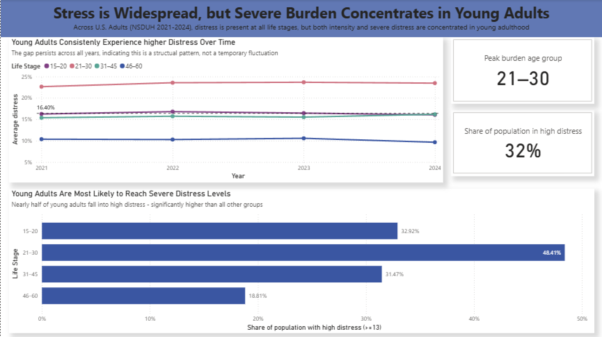
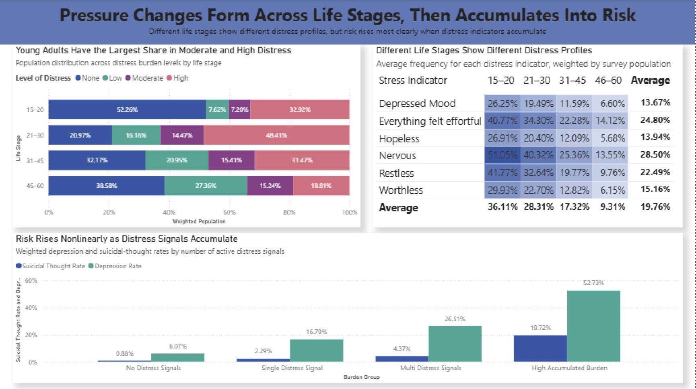
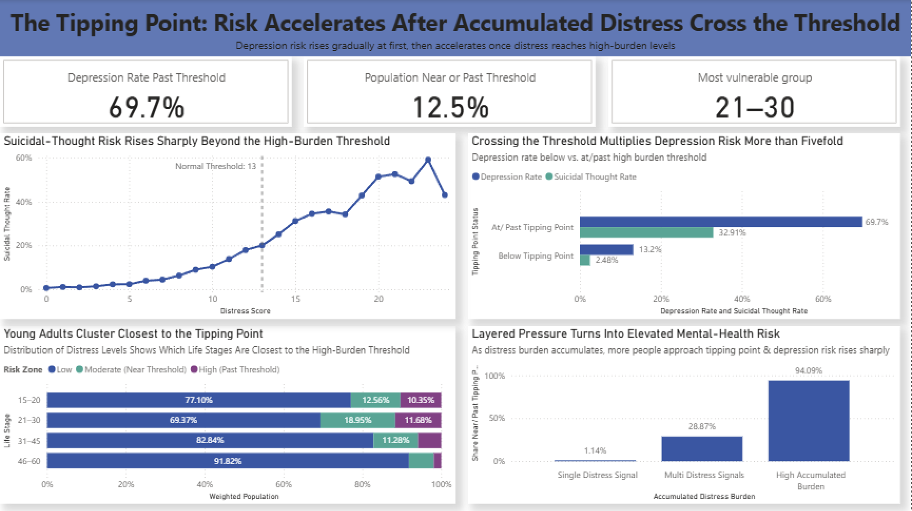

Analytical structure
Break a broad question into population patterns, contributing indicators and a focused exploratory comparison.
Power BI / Survey Analysis / Data Storytelling
A three-stage dashboard narrative using NSDUH 2021–2024 data: establish the age-group pattern, examine accumulated indicators, then explore a high-burden threshold.
How do reported distress and related mental-health indicators vary across the displayed age groups, and how can a reader move from a broad comparison to a more focused examination of accumulated burden?
The report organizes multiple chart types into a sequence rather than presenting a collection of disconnected visuals. Its layout includes year and age comparisons, a weighted population distribution, an indicator heatmap and a threshold exploration.
These are the original report exports. Open an image for its full-size view.



The dashboard presents descriptive survey comparisons across the displayed age groups, including ages 15–20. References to “risk” in the original charts describe observed group rates. The final page uses an exploratory score cut-off to organize comparisons.
Each page answers a different question: population patterns, accumulated indicators and threshold groups. Read percentages within their displayed filters and category definitions.
Break a broad question into population patterns, contributing indicators and a focused exploratory comparison.
Use chart choice and sequencing to guide a reader through a complex survey.
Match each comparison to its denominator, age group and analytical question.